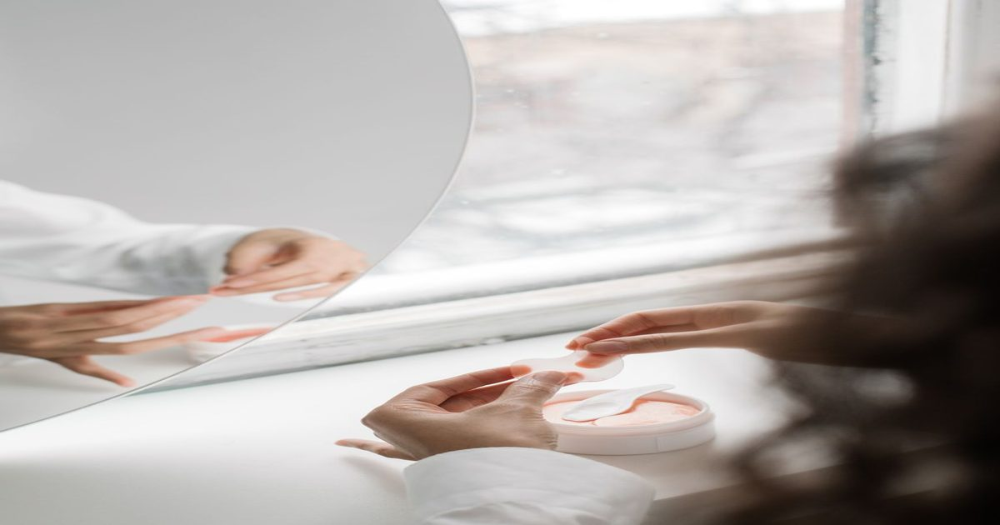

Национальное рекламное подразделение подтвердило заявления Дав о 24‑часовом увлажнении после жалобы Пи-энд-Джи
Национальное рекламное подразделение США признало обоснованными утверждения бренда Дав о круглосуточном увлажнении и питании сухой кожи. Решение вынесено после того, как конкурент Пи-энд-Джи оспорил эти заявления, считая их вводящими в заблуждение.
Суть спора и роль НРП
Национальное рекламное подразделение (НРП) — саморегуляторный орган, который проверяет достоверность рекламных обещаний и рассматривает жалобы конкурентов. В данном случае Пи-энд-Джи потребовала доказать, что гель для душа Дав Дип Моистур действительно обеспечивает 24‑часовое увлажнение и питает самую сухую кожу. НРП рассмотрела представленные материалы и вынесла решение в пользу Юнилевера, владельца бренда.
Процедура рассмотрения включала анализ клинических исследований, предоставленных обеими сторонами. Юнилевер представила краткосрочное исследование увлажнения, измерявшее уровень гидратации кожи в течение суток после единственного применения средства. Пи-энд-Джи предоставила свои данные, которые, по мнению НРП, не опровергли результаты исследования Юнилевера и не были признаны более надежными.
Таким образом, НРП подтвердила, что рекламные формулировки соответствуют имеющимся доказательствам и не вводят потребителей в заблуждение. Решение подчеркивает важность наличия объективных измерений для подтверждения любых заявлений о длительном действии уходовых средств.

Доказательная база Юнилевера
Юнилевер опиралась на результаты специального теста, в котором оценивался уровень влаги в роговом слое кожи через равные промежутки времени в течение 24 часов после мытья. Методология предполагала инструментальную корнеометрию, что позволяет получить воспроизводимые количественные данные о гидратации.
Дополнительно компания предоставила депонирующие исследования, демонстрирующие, что компоненты средства оседают на поверхности и внутри верхнего слоя кожи, восстанавливая липидный барьер. Это обосновывало фразы о питании и регенерации естественного увлажнения, так как потребители воспринимают термин «питает» в контексте восстановления барьерной функции.
НРП признала представленные данные достаточными для подтверждения как количественного (24 часа), так и качественного (питание, регенерация) аспектов рекламных обещаний. Отсутствие методических недостатков в исследовании Юнилевера стало ключевым аргументом в пользу бренда.

Оценка аргументов Пи-энд-Джи
Пи-энд-Джи пыталась оспорить достоверность краткосрочного теста, указывая на возможные различия в протоколах и выборке. Однако НРП установила, что методология Юнилевера соответствует принятым стандартам и позволяет делать выводы о сохранении увлажнения в течение суток.
Конкурент также утверждал, что название «Дип Моистур» создает ложное впечатление о глубоком увлажнении. Юнилевер ответила, что фраза может трактоваться по‑разному и не требует изменения без доказательств дезинформации потребителей. НРП согласилась с этой позицией, так как сами заявления об увлажнении уже были подтверждены.
В итоге аргументы Пи-энд-Джи не признаны убедительными: ни одно из представленных ими исследований не опровергло результаты Юнилевера, а претензии к названию продукта остались без подтверждения фактами.
Что это значит для потребителей
Решение НРП не является медицинской рекомендацией, но сигнализирует о том, что рекламные обещания бренда имеют под собой лабораторную базу. Потребители могут ориентироваться на такие заявления как на дополнительный критерий выбора средства для ежедневного умывания.
Важно помнить, что инструментальные измерения гидратации показывают средние значения на группе волонтеров; индивидуальный результат может отличаться в зависимости от состояния барьера кожи, климата и сопутствующего ухода.
Для осознанного подхода к уходу стоит обращать внимание на состав продукта, наличие липидозаменителей и увлажняющих агентов, а также на соответствие заявлений независимым экспертизам, подобным проведённой НРП.
Коротко: НРП подтвердила, что гель для душа Дав Дип Моистур обеспечивает 24‑часовое увлажнение и питание сухой кожи на основании представленных исследований. Жалоба конкурента Пи-энд-Джи не нашла подтверждения в предоставленных данных.
Какие критерии вы используете при выборе средства для душа, чтобы быть уверенным в его увлажняющих свойствах?